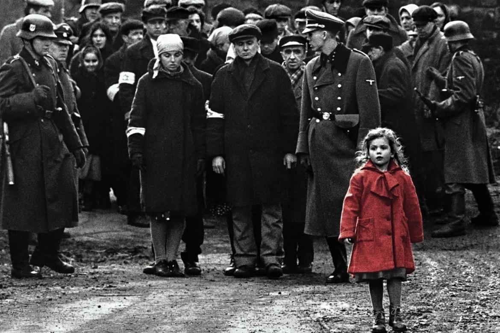

🎥 Os Melhores Filmes do Mundo
Uma seleção épica dos filmes mais impactantes da história do cinema
🏆 Top 5 Melhores Filmes
- O Poderoso Chefão (1972)
- Um Sonho de Liberdade (1994)
- O Cavaleiro das Trevas (2008)
- A Lista de Schindler (1993)
- 12 Homens e uma Sentença (1957)
Detalhes dos Filmes
1. O Poderoso Chefão
Diretor: Francis Ford Coppola • Ano: 1972
Uma obra-prima sobre poder, família e lealdade que mudou o cinema para sempre.

▶ Ver Trailer
2. Um Sonho de Liberdade
Diretor: Frank Darabont • Ano: 1994
A história mais emocionante sobre esperança e amizade já contada.

▶ Ver Trailer
3. O Cavaleiro das Trevas
Diretor: Christopher Nolan • Ano: 2008
Heath Ledger como o Coringa entregou a maior performance de vilão da história.

▶ Ver Trailer
4. A Lista de Schindler
Diretor: Steven Spielberg • Ano: 1993
Um dos retratos mais poderosos e necessários sobre o Holocausto já feitos.

▶ Ver Trailer
5. 12 Homens e uma Sentença
Diretor: Sidney Lumet • Ano: 1957
Um clássico absoluto sobre justiça, preconceito e o poder da dúvida.

▶ Ver Trailer